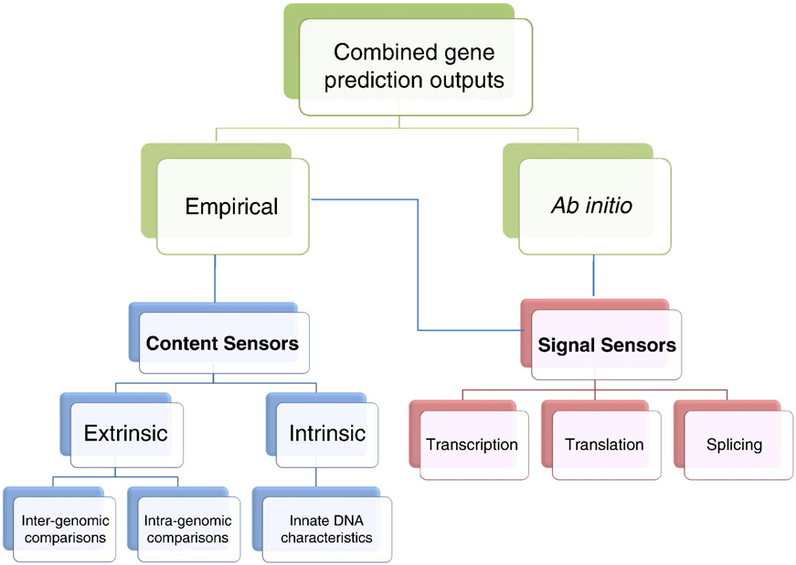
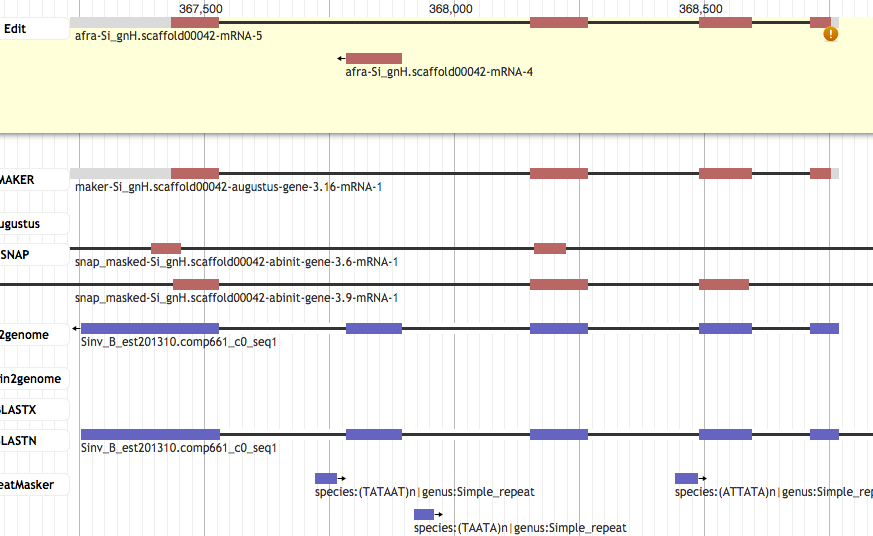

MSc Bioinformatics
Gene predictions
Bruno Vieira | @bmpvieira
Elena Shanti Franchina

Why is this important?
Genes are the basic building block of organisms
How?

Gene prediction models (Sleator, 2010)
WebApollo -> Afra
 Anurag Priyam | @yeban
Anurag Priyam | @yeban
BLAST
Missing Exon

Missing Exon

Missing Exon

Extra Exon

Split

Split

Split